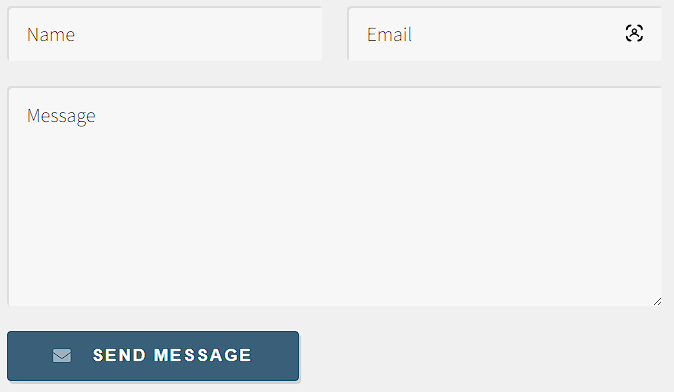
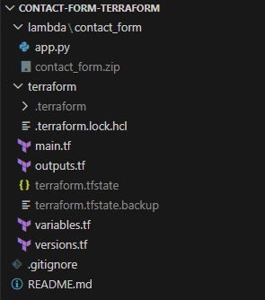
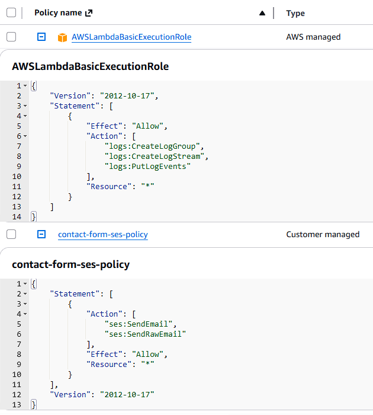
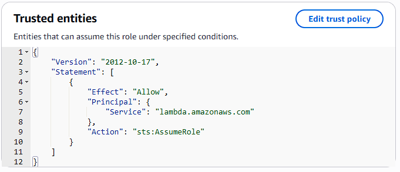
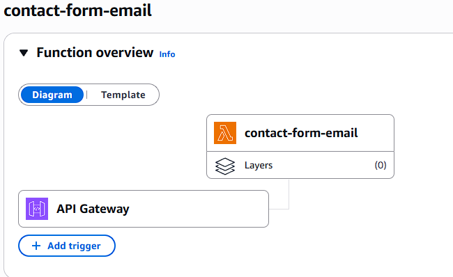
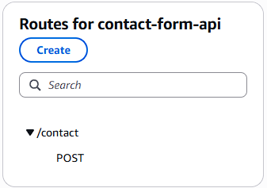
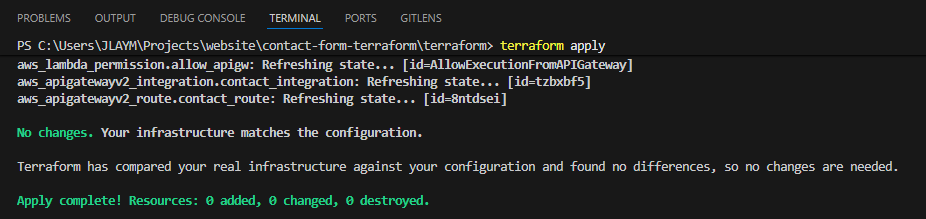
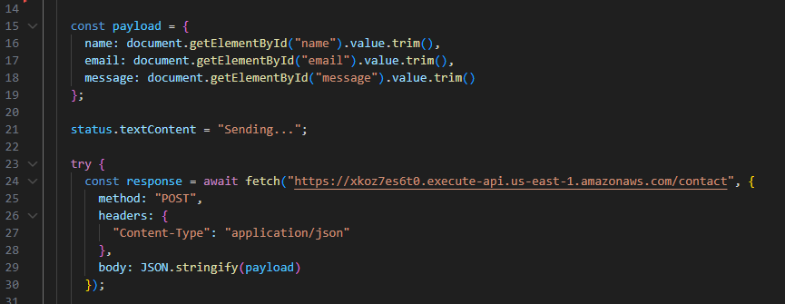
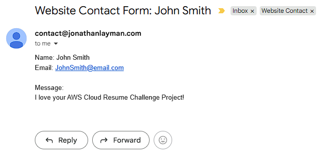
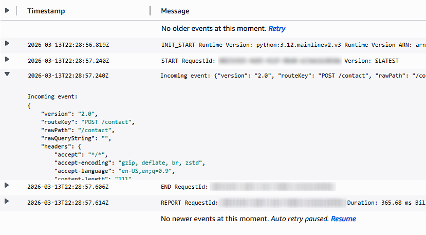

Building a Serverless Contact Form with Terraform
Part 9 of the AWS Cloud Resume Challenge.
Backend Serverless Code (Lambda + DynamoDB): https://github.com/jlayman09/cloud-resume-backend
Serverless Contact Form API (Terraform + Lambda): https://github.com/jlayman09/cloud-resume-contact-api
After migrating my existing infrastructure to Terraform, the final piece of the Cloud Resume Challenge was to add a dynamic feature that demonstrated a complete, end-to-end serverless workflow: a contact form. While many websites use third-party services for this, building my own was a perfect opportunity to dive deeper into API Gateway, Lambda, and IAM, all managed through Infrastructure as Code.
The goal was to create a form that could take a visitor's name, email, and message, and securely deliver it to me without managing a single server. This required building a backend API from scratch using Terraform, connecting it to a Lambda function for processing, and integrating it with the frontend JavaScript.

High-level architecture of the serverless contact form.The Architecture
The final workflow follows a classic serverless pattern:- A visitor fills out the contact form on the website.
- Frontend JavaScript sends the form data as a
POSTrequest to an API Gateway endpoint. - API Gateway triggers a Lambda function, passing the request data along.
- The Lambda function validates the data, formats it into an email, and uses AWS Simple Email Service (SES) to send it.
- The function returns a success or error response, which the frontend JavaScript displays to the user.
Step 1: Structuring the Terraform Project
To keep the new infrastructure isolated from the existing visitor counter backend, I created a dedicated Terraform project for the contact form. This separation prevents accidental changes to other parts of the site and makes the new components easier to manage.
I organized the configuration into multiple files, which is a best practice that improves readability and maintainability:provider.tf
variables.tf
main.tf
iam.tf
lambda.tf
apigateway.tf
outputs.tf
The Terraform project was organized into separate files for clarity and maintenance.Step 2: Initializing the Terraform Workflow
With the file structure in place, the first step in any Terraform workflow is configuring the provider and initializing the project. The provider block tells Terraform that we'll be working with AWS resources.
After running terraform init to download the necessary provider plugins, my workflow for any change followed a strict cycle:
# 1. Format the code for consistency
terraform fmt
# 2. Validate the syntax
terraform validate
# 3. Review the execution plan
terraform plan
# 4. Apply the changes
terraform applyStep 3: Securing the Backend with an IAM Role
Following the principle of least privilege, the Lambda function needed an execution role with only the permissions required to do its job. I defined an IAM role in Terraform that granted the function two key capabilities:
- The ability to write logs to Amazon CloudWatch for debugging.
- Permission to send emails using Amazon Simple Email Service (SES).
The role's trust policy was configured to allow only the Lambda service to assume it, ensuring no other entity could use its permissions.

The IAM role grants the Lambda function least-privilege permissions for logging and sending email.
sts:AssumeRole.
Step 4: Building the Lambda Function
The Lambda function contains the Python code that runs when a visitor submits the form. Its job is to:
- Receive the request body from API Gateway.
- Read and validate the name, email, and message fields.
- Format the data into a clean, readable email.
- Use the Boto3 SDK to send the email via SES.
- Return a JSON response to the frontend indicating success or failure.

The deployed Lambda function, ready to be triggered by API Gateway.Step 5: Creating the API Gateway Endpoint
With the backend logic in place, the website needed a public endpoint to send requests to. I used API Gateway to create an HTTP API with a single /contact route that accepts POST requests. This route was then integrated with the Lambda function, so any request to the endpoint would trigger the function.

The API Gateway route configuration, which forwards POST requests to the Lambda function.Step 6: Configuring CORS
Because the browser sends a request from my domain (jonathanlayman.com) to the API Gateway domain, I had to configure Cross-Origin Resource Sharing (CORS). Without the correct CORS headers, the browser's security policy would block the request. I configured the API in Terraform to explicitly allow POST requests from my website's origin.
Step 7: Deploying the Infrastructure with Terraform
Once all the Terraform files were defined, deploying the entire backend was as simple as running one command:
terraform applyTerraform automatically provisioned the IAM role, Lambda function, and API Gateway, including all the necessary permissions and integrations.

Terraform's output after successfully creating all the AWS resources.Step 8: Connecting the Frontend Form to the API
The final step was updating the website's JavaScript. I wrote a script that:
- Listens for the contact form's `submit` event.
- Prevents the default browser submission.
- Captures the form values and builds a JSON payload.
- Sends a
POSTrequest to the API Gateway endpoint using the Fetch API. - Displays a success or error message to the user based on the API's response.

The JavaScript code responsible for sending form data to the backend API.Step 9: Testing the Full Workflow
With both the frontend and backend deployed, I tested the entire flow by submitting a message from the live site. The form submission was successful, and the message arrived in my inbox moments later.

The success message displayed to the user after the form is submitted.Step 10: Troubleshooting with CloudWatch Logs
Throughout the process, Amazon CloudWatch Logs were essential for debugging. Whenever the form failed, I could check the Lambda function's logs to see the exact request data it received and identify any runtime errors in the Python code. This made it easy to troubleshoot issues like incorrect IAM permissions or data validation errors.

CloudWatch logs provided real-time visibility into the Lambda function's execution.Conclusion and Lessons Learned
Building the serverless contact form was the perfect capstone for the Cloud Resume Challenge. It tied together nearly every concept from the previous stages: frontend development, backend logic, infrastructure as code, and security. The final result is a fully functional, automated, and serverless feature that enhances the website without adding operational overhead.
The biggest challenges were not in writing the code itself, but in managing the integrations between services. Debugging IAM policies, configuring CORS headers, and ensuring the data format was consistent from the browser all the way to Lambda were critical hurdles. Working through them provided invaluable hands-on experience that goes far beyond what can be learned from documentation alone. With this final piece in place, the entire website and its backend services are now managed as code, making the project resilient, repeatable, and easy to extend in the future.